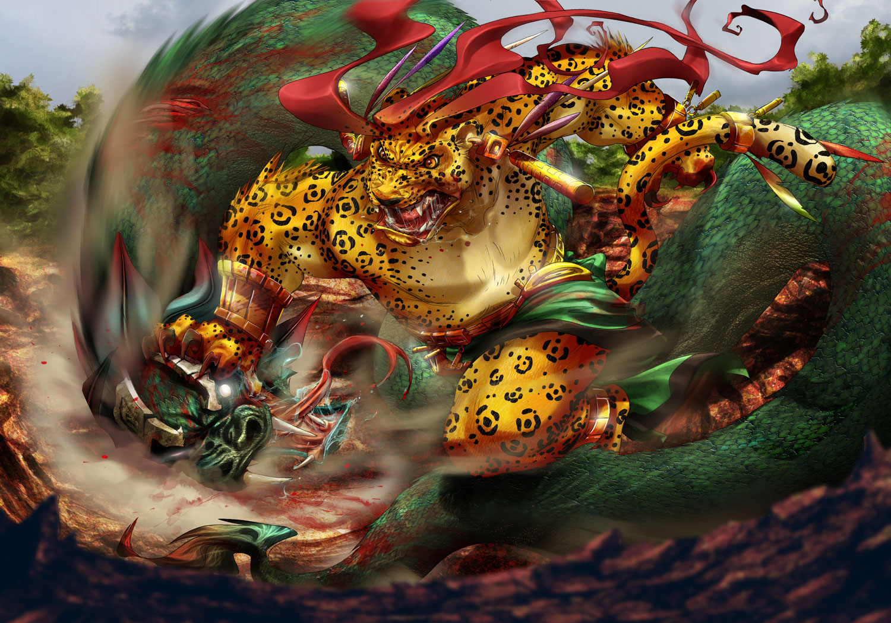

The purpose of The Arena is to survive as long as possible and to score as many points as possible by killing the challengers. The process of developing this game was through trial and error. By testing the game, we were able to figure out what was wrong and how to fix it. This process was used a lot for the idle animation and movement animation of the player. We had trouble trying to get the animation to stop at the moment another animation started. This problem caused another animation to occur which we did not want. To fix this, we made a broadcast system where when one of the directional movement keys were pressed, it would stop all scripts, broadcast all messages that started the player. This was the fix for the movement, but we were snot able to figure out how to do this for the idle animation.
Our story is that you’re an,adventurer like Indiana Jones but sadly you do it for the money. You are given a job opportunity by a mysterious man and you have to take it otherwise you will die due to starvation and thus your story begins.
The process of the game was mostly if and else statements but sometimes we would loop the answers so you could not break the game with inputting random text.
How every answer has multiple endings and the story revolves around a temple with mysterious affects. Brandon's story about how Timmy is a happy boy that it's completely different because of the crazy storyline he has it was very funny and crazy endings.
I would have a different storyline and would make it little longer and more detailed and lure the reader in.